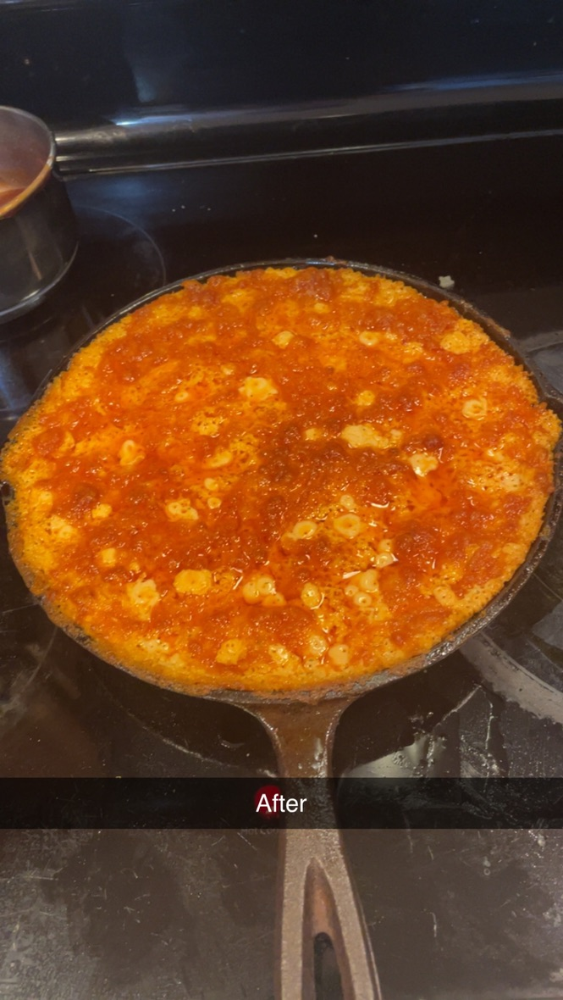

Buffalo Chicken Dip

Description
This greasy, cheesy, slightly spicy dip may only be edible for one day out of the year, but can make the super bowl watchable.
Ingredients
- 1 whole rotisserie chicken
- 1 cup of Frank's RedHot or other desired sauce.
- 16 oz cream cheese
- 1 cup ranch or 1/2 cup ranch and 1/2 cup blue cheese
- 1/2 cup green onion
- 1/2 yellow onion
- 1 tbsp unsalted butter
- Crackers
- 1 cup shredded cheddar
Steps
- Begin carving up rotisserie chicken. Share wings and drumsticks with party or yourself to satiate desires.
- Chop 1/2 yellow onion to small dices.
- Sweat onions in large cast iron skillet on medium heat with butter. Add in chicken and hot sauce. Stir. Note: It is a good idea that the cream cheese is softened before next step.
- Add in cream cheese and stir. Add ranch and optional blue cheese. Mix well.
- Once ingredients have had a chance to get to know eachother, top with cheddar. Transfer skillet to oven at 350 degrees Fahrenheit. Allow 30-40 minutes for cheese to crisp.
- Take skillet out of oven and rest for at least 3 minutes. Top with green onion and serve with crackers of choice.